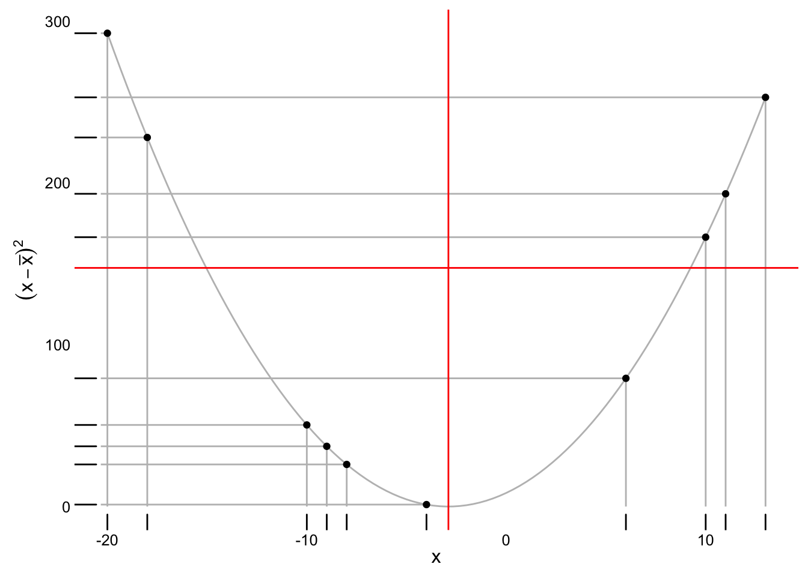

POL S/CS&SS 501, University of Washington, Spring 2015
$$ \DeclareMathOperator{\mean}{mean} \DeclareMathOperator{\var}{var} \DeclareMathOperator{\E}{E} \DeclareMathOperator{\argmin}{argmin} \DeclareMathOperator{\argmax}{argmax} $$Descriptive Statistics
Jeffrey Arnold
January 14, 2016
These are some notes that extend the discussion of descriptive statistics in OpenIntro Statistics, Chapter 1, and Statistical Modeling and Inference for Social Science, Chapter 2. They are not a replacement for that material.
We will use the following packages in this section, which we will load now.
library("ggplot2")
library("gapminder")Measures of Central Tendency
Challenge
Let \(x = (4, 2, 8, 3)\) be a vector of data. The mean is \(\bar{x} = \frac{1}{4}\sum_{i = 1}^4 x_i = \frac{1}{4} 17 = 4.25\).
- Now consider a new vector which is \(x\) with an additional element, \(x_5 = 11\). Call this new vector \(x' = (4, 2, 8, 3, 4)\). What is the mean of \(x'\)? What is the difference in the means?
- Now consider the vector \(x' = (4, 2, 8, 3, x_5)\)? What is \(\bar{x}'\)? what is the difference in means \(\bar{x}' - \bar{x}\) in terms of \(\bar{x}\) and \(x_5\)?
- Now consider the general case in which \(x = (x_1, \dots, x_n)\) and \(x' = (x_1, \dots, x_n, x_{n + 1})\). What is the difference in means in terms of \(\bar{x}\) and \(x_{n + 1}\)?
- The new mean is 5.6. The difference in means is 1.35
- The new mean is \(\bar{x}' = \frac{1}{5} (192 - x_5)\)
- In the general case, the new mean is \(\bar{x}' = \frac{1}{n + 1}(\bar{x} - x_{n + 1})\): \[ \begin{aligned}[t] \bar{x}' = \frac{1}{n + 1} \left(x_1 + \dots + x_n + x_{n + 1}\right) \\ &= \frac{1}{n + 1}\left( n \bar{x} + x_{n + 1} \right) . \end{aligned} \] The difference in means is, \[ \begin{aligned}[t] \bar{x}' - \bar{x} &= \frac{1}{n + 1}\left( n \bar{x} + x_{n + 1} \right) - \bar{x} \\ &= \frac{1}{n + 1} x_{n + 1} + \frac{n}{n + 1} \bar{x} - \bar{x} \\ &= \frac{1}{n + 1} x_{n + 1} + \frac{n}{n + 1} \bar{x} - \frac{n + 1}{n + 1} \bar{x} \\ &= \frac{1}{n + 1} x_{n + 1} - \frac{1}{n + 1} \bar{x} \\ &= \frac{1}{n + 1} \left( x_{n + 1} - \bar{x} \right) . \end{aligned} \] This equation reveals several properties about the mean (1) Since it is divided by \(n + 1\), with more observations, each additional observation has less effect on the mean. (2) The effect of an observation on the mean increases with its distance from the mean. This means that an arbitrarily large (or small) observation can change the mean to any desired value. (3) Observations greater than the mean increase the mean, and observations less than the mean decrease the mean.
Challenge
Let \(x = (1, 6, 2, -10, 11)\).
- What is the median?
- Add an observation, \(x^* = 4\). What is the new median?
- Add an observation, \(x^* = 1.5\). What is the new median?
- Add an observation, \(x^* = 12\). What is the new median?
- Add an observation, \(x^* = -5\). What is the new median?
- In general, how does the median change with the addition of a new observation? Hint: there are four cases to consider.
Challenge
- What is the definition of the mode?
- What is the mode of continuous variable?
The mean, median, and mode are all measures of a central tendency of a sample. But they can produce different values, so why and how do they differ in the way they define what the “center” of the sample. Let \(d(x_i, m)\) be the distance between each observation in the sample and the middle; \(d(x_i, m)\) is a function that will be equal to 0 if \(x_i = m\) and greater than 0 if \(x_i \neq m\).
The statistics—mean, median, and mode—differ in how they define \(d\).
- Mean: \(d(x_i, m) = {(x_i - m)}^2\)
- Median: \(d(x_i, m) = \left|x_i - m \right|\) where \(\left| a \right|\) is the absolute value of \(a\).
- Mode: If \(x_i = m\) then d(x_i, m) = 0$, otherwise \(d(x_i, m) = 1\) (\(\infty\) or any positive constant will work).
Then to find the value of the statistic find the value of \(m\) that minimizes the sum of \(d(x_i, m)\) for the sample, \[ m = \arg \min_a \sum_{i = 1}^n d(x_i, a) \] using the appropriate definition of \(d\) .
There are better ways to find this, but for pedagical purposes, try finding the mean with brute force way. Sttart with the mean. What we want to do is for many different values of \(a\), calculate \(\sum_{i = 1}^2 d(x_i, a)\). The mean will be the value of \(a\) that has the smallest value of \(\sum_{i = 1}^2 d(x_i, a)\).
Let’s randomly draw some values for a sample.
x <- sample(-20:20, 10, replace = TRUE)
x## [1] -20 -19 -2 6 -12 18 -5 -6 -19 -5Take as given, the mean will be between the minimum and maximum values of the sample. So we will try 100 different values of \(a\) between \(min(x)\) and \(max(x)\),
a <- seq(min(x), max(x), length.out = 500)Now we need to calculate \(\sum_{i = 1}^2 d(x_i, a)\) for each value of \(a\). But first, let’s calculate it for one value of \(a\). The sum of squared errors for \(a = min(x)\) is,
sum((x - min(a)) ^ 2)## [1] 3156To calculate it for many values of \(a\), we will use a for loop. First, we will create a new vector, the same length as \(a\) which will hold the values of \(\sum_{i = 1}^n (x_i - a)^2\) for each value of \(a\).
sum_sq_errors <- rep(NA, length(a))Now, we will loop through each value of \(sum_sq_errors\), calculate the sum of squared errors, and save it to sum_sq_errors.
for (i in 1:length(a)) {
a_i <- a[i]
err <- sum((a_i - x) ^ 2)
sum_sq_errors[i] <- err
}Let’s plot the values of sum_sq_errors to find the approximate minimum.
ggplot() +
geom_line(data.frame(a = a, sum_sq_errors = sum_sq_errors),
mapping = aes(x = a, y = sum_sq_errors)) +
geom_rug(data.frame(x = x), mapping = aes(x = x), sides = "b") Use the function
Use the function which to find the location of the minimum value in sum_sq_errors,
sse_loc_min <- which(sum_sq_errors == min(sum_sq_errors))
sse_loc_min## [1] 180The minimum value of the sum of squared errors is
sum_sq_errors[sse_loc_min]## [1] 1306.41But the mean is the value of a with the minimum sum of squared errors,
a[sse_loc_min]## [1] -6.368737This should be very close to the actual mean,
mean(x)## [1] -6.4However, the brute force way of searching for the mean is not necessary. We already know this because we have a formula for the mean! The formula for the mean is found by solving for the value that minimizes the squared errors with calculus. First, find the extrema (local or global minima or maxima) of \(f(a) = \sum_{i = 1}^n (x - a)^2\), \[ \begin{aligned}[t] \frac{d}{d\,a} \sum_{i = 1}^n (x_i - a)^2 &= 0 \\ - 2 \sum_{i = 1}^n (x_i - a) &= 0 \\ - 2 \sum_{i = 1}^n x_i + 2 n a &= 0 \\ 2 n a &= \sum{i = 1}^n x_i \\ a &= \frac{1}{n} \sum{i = 1}^2 x_i \end{aligned} \] Given we already know the answer, it’s unsurprising that there is only one extrema and it gives us the formula of the mean. However, let’s confirm that it is a minima by checking that the second derivative is positive, \[ \begin{aligned}[t] \frac{d^2}{d\,a^2} \sum_{i = 1}^n (x_i - a)^2 &= \frac{d}{d\,a} 2(n a - \sum_{i = 1}^n x_i) \\ &= 2n > 0 \end{aligned} \]
Challenge
- Edit the code below to find the median of
x.
errors <- rep(NA, x)
for (i in 1:length(a)) {
a_i <- a[i]
# Edit the line below to use the d(x_i, a) for the median
# errors[i] <- ???
}Now plot the valus of errors to find the median.
ggplot() +
geom_line(data.frame(a = a, errors = errors),
mapping = aes(x = a, y = errors)) +
geom_rug(data.frame(x = x), mapping = aes(x = x), sides = "b")## Error in data.frame(a = a, errors = errors): object 'errors' not found- What is the approximate value of the median?
- Use
whichto find the value(s) of the median? - Check your work using the built in function
median.
Challenge
- Try the same with a mode? Is it unique?
- Try calculating the mode in R. Use the
modefunction? Is it giving you what you expect? Look at the help ofmodeto find out what is going on. - What function
dwould produce theminimumas the best guess? - What function
dwould produce themaximumas the best guess?
Measures of Spread
Variance is defined as \[ \frac{1}{n - 1} \sum_{i = 1}^n (x_i - \bar{x})^2 \] Let \(E_i = (x_i - \bar{x})\), and call it the error of datum \(i\), as it is the difference between the value of the datum and the mean. Let \(E = (E_1, \dots, E_n)\) be the vector of errors. The variance is approximately the mean of the squared errors, \[ \var(x) = \frac{1}{n - 1} \sum_{i = 1}^n (x_i - \bar{x})^2 = \frac{1}{n} \sum_{i = 1}^n E_i^2 \approx \frac{1}{n} E_i^2 = \mean(E^2) \] The difference between the variance and the mean of the squared errors is that the variance divides the sum of squared errors by \(n - 1\) instead of \(n\). The reasons for this is that dividing by \(n - 1\) instead of \(n\) makes the sample variance an unbiased estimator of the population variance (something which we have not covered yet). This adjustment is not necessary for the sample mean, because the sample mean happens to be an unbiased estimator of the population mean.
You can visualize the relationship between the mean, squared errors, and variance using the following plot.
variance_plot <- function(x) {
x_mean <- mean(x)
errors <- x - x_mean
sq_errors <- errors ^ 2
df <- data.frame(x = x,
sq_errors = sq_errors)
offset <- diff(range(x)) * 0.01
xlim <- range(x) + c(-1, 1) * offset
xseg <- seq(min(x), max(x), length.out = 100)
ggplot(df) +
# Data points on the x axis
geom_rug(aes(x = x, y = sq_errors), sides = "bl") +
geom_segment(xend = x, x = x, y = 0, yend = sq_errors,
color = "gray") +
geom_segment(xend = xlim[1], x = x, y = sq_errors, yend = sq_errors,
color = "gray") +
geom_line(data.frame(x = xseg, y = (xseg - x_mean)^2),
mapping = aes(x = x, y = y), colour = "gray") +
# Line for mean
geom_vline(xintercept = x_mean, color = "red") +
# Line for variance
geom_hline(yintercept = var(x), color = "red") +
# Data points with their squared errors
geom_point(aes(y = sq_errors, x = x)) +
ylab(expression((x - bar(x)) ^ 2 )) +
xlab(expression(x)) +
# minimial theme with no gridlines
theme_minimal() +
theme(panel.grid = element_blank(),
axis.ticks = element_blank())
}Lets randomly draw some numbers and visualize the variance and mean, and squared errors.
set.seed(1234789)
x <- sample(-20:20, 10)
variance_plot(x)
Challenge
How does the variance respond to outliers? What is your reasoning?

This work is licensed under a Creative Commons Attribution-NonCommercial-ShareAlike 4.0 International License. R code is licensed under a BSD 2-clause license.